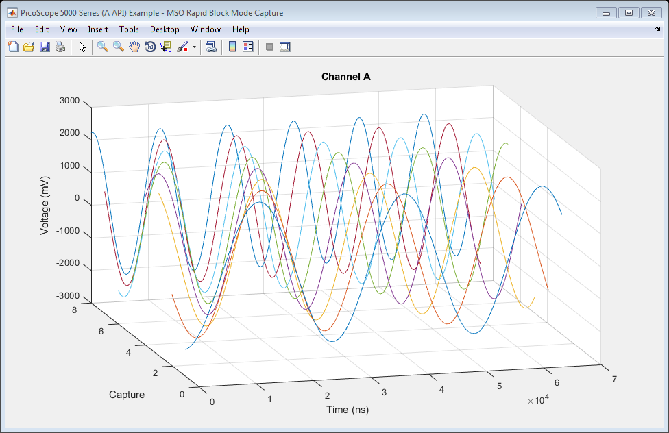
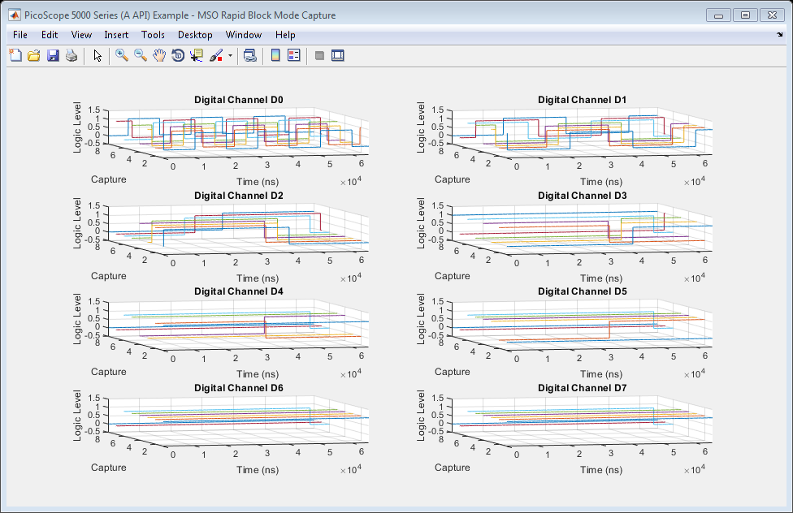

PicoScope 5000 Series (A API) Instrument Driver Mixed Signal Oscilloscope Rapid Block Data Capture With 3D Plot Example
This is an example of an instrument control session using a device object. The instrument control session comprises all the steps you are likely to take when communicating with your instrument.
These steps are:
- Create a device object
- Connect to the instrument
- Configure properties
- Invoke functions
- Disconnect from the instrument
To run the instrument control session, type the name of the file, PS5000A_ID_MSO_Rapid_Block_Plot3D_Example, at the MATLAB command prompt.
The file, PS5000A_ID_MSO_RAPID_BLOCK_PLOT3D_EXAMPLE.M must be on your MATLAB PATH. For additional information on setting your MATLAB PATH, type 'help addpath' at the MATLAB command prompt.
Example: PS5000A_ID_MSO_Rapid_Block_Plot3D_Example;
Description: Demonstrates how to call functions in order to capture a series of waveforms using rapid block mode on a PicoScope 5000 Series Mixed Signal Oscilloscope using the underlying 'A' API library functions and plot the data using a 3-dimensional plot.
Copyright: © 2018 Pico Technology Ltd. See LICENSE file for terms.
Contents
- Suggested input test signals
- Clear command window and close any figures
- Load configuration information
- Device connection
- Set analog channels and digital ports
- Set device resolution
- Set memory segments
- Verify timebase index and maximum number of samples
- Set simple trigger
- Set rapid block parameters and capture data
- Obtain the number of captures
- Process data
- Stop the device
- Disconnect device
Suggested input test signals
This example was published using the following test signals:
- Channel A: 4 Vpp Swept sine wave (Start: 10 kHz, Stop: 100 kHz, Sweep type: Up, Increment type: Linear, Increment Time: 1 ms, Mode: Continous)
- PORT0 : 5 kHz bit counter signal from test device (applied to all channels).
Clear command window and close any figures
clc;
close all;
Load configuration information
PS5000aConfig;
Device connection
% Check if an Instrument session using the device object |ps5000aDeviceObj| % is still open, and if so, disconnect if the User chooses 'Yes' when prompted. if (exist('ps5000aDeviceObj', 'var') && ps5000aDeviceObj.isvalid && strcmp(ps5000aDeviceObj.status, 'open')) openDevice = questionDialog(['Device object ps5000aDeviceObj has an open connection. ' ... 'Do you wish to close the connection and continue?'], ... 'Device Object Connection Open'); if (openDevice == PicoConstants.TRUE) % Close connection to device. disconnect(ps5000aDeviceObj); delete(ps5000aDeviceObj); else % Exit script if User selects 'No'. return; end end % Create a device object. ps5000aDeviceObj = icdevice('picotech_ps5000a_generic', ''); % Connect device object to hardware. connect(ps5000aDeviceObj);
PicoScope 5000 Series (A API) MATLAB Instrument Driver
Copyright © 2013-2018 Pico Technology Ltd. All rights reserved.
Number of units found: 1
Serial number(s): FY971/0003
Opening PicoScope 5000 Series (A API) device...
Instrument Device Object Using Driver : picotech_ps5000a_generic.mdd
Instrument Information
Type: Oscilloscope
Manufacturer: Pico Technology Ltd.
Model: PicoScope 5000A, 5000B and 5000D Series
Driver Information
DriverType: MATLAB generic
DriverName: picotech_ps5000a_generic.mdd
DriverVersion: 2.2.14.39
Communication State
Status: open
Default Channel Setup:-
-----------------------
Channel A:-
Enabled: True
Coupling: DC
Range: 5 V
Analog offset: 0.0 V
Channel B:-
Enabled: True
Coupling: DC
Range: 5 V
Analog offset: 0.0 V
Channel C:-
Enabled: True
Coupling: DC
Range: 5 V
Analog offset: 0.0 V
Channel D:-
Enabled: True
Coupling: DC
Range: 5 V
Analog offset: 0.0 V
Default Digital Port Setup:-
----------------------------
PORT0:-
Enabled: True
Logic Level: +1.5 V
PORT1:-
Enabled: True
Logic Level: +1.5 V
Turning off Equivalent Time Sampling...
Equivalent Time Sampling turned off.
Turning off trigger...
Trigger turned off.
Default Block mode parameters:-
Timebase index : 65
Time Interval: 504 ns
Number of pre-trigger samples: 0
Number of post-trigger samples: 10000
Total number of samples: 10000
Default Streaming mode parameters:-
Streaming interval: 1.00e-06 s
Streaming auto stop: 1
Default Signal generator parameters:-
Start frequency: 1000 Hz
Stop frequency: 1000 Hz
Connected to PicoScope 5000 Series (A API) device:-
Instrument Model: 5444DMSO
Batch/Serial Number: FY971/0003
USB Version: 3.0
Analog Channels: 4
Digital Channels: 16
Resolution: 8 bits
Bandwidth: 200 MHz
Buffer Memory: 512 MS
Maximum Sampling Rate: 1 GS/s
Signal Generator Type: Arbitrary Waveform Generator
5 V Power Supply connected: True
Set analog channels and digital ports
Default driver settings applied to channels are listed below - use the Instrument Driver's ps5000aSetChannel() function to turn channels on or off and set voltage ranges, coupling, as well as analog offset.
% In this example, data is collected on channel A, as well as Digital Port % 0 channels (D0 - D7). Channel B is switched and if it is a 4-channel % model, channels C and D will be switched off if the power supply is % connected. Digital Port 1 (D8 - D15) is switched off. % Channels : 0 (ps5000aEnuminfo.enPS5000AChannel.PS5000A_CHANNEL_A) % Enabled : 1 (PicoConstants.TRUE) % Type : 1 (ps5000aEnuminfo.enPS5000ACoupling.PS5000A_DC) % Range : 8 (ps5000aEnuminfo.enPS5000ARange.PS5000A_5V) % Analog Offset : 0.0 V % Channels : 1 - 3 (ps5000aEnuminfo.enPS5000AChannel.PS5000A_CHANNEL_B, PS5000A_CHANNEL_C & PS5000A_CHANNEL_D) % Enabled : 0 (PicoConstants.FALSE) % Type : 1 (ps5000aEnuminfo.enPS5000ACoupling.PS5000A_DC) % Range : 8 (ps5000aEnuminfo.enPS5000ARange.PS5000A_5V) % Analog Offset : 0.0 V % Turn off channel B [status.setChC] = invoke(ps5000aDeviceObj, 'ps5000aSetChannel', 1, 0, 1, 8, 0.0); % Find current power source [status.currentPowerSource] = invoke(ps5000aDeviceObj, 'ps5000aCurrentPowerSource'); if (ps5000aDeviceObj.channelCount == PicoConstants.QUAD_SCOPE && status.currentPowerSource == PicoStatus.PICO_POWER_SUPPLY_CONNECTED) [status.setChC] = invoke(ps5000aDeviceObj, 'ps5000aSetChannel', 2, 0, 1, 8, 0.0); [status.setChD] = invoke(ps5000aDeviceObj, 'ps5000aSetChannel', 3, 0, 1, 8, 0.0); end
Use the ps5000aSetDigitalPort() function to enable/disable digital ports and set the logic level threshold. This function is located in the Instrument Driver's Digital Group. Enabling a digital port will enable all channels on that port, while setting the enabled parameter to 0 will turn off all digital channels on that port.
digitalObj = get(ps5000aDeviceObj, 'Digital'); % Digital Port : 128 (ps5000aEnuminfo.enPS5000AChannel.PS5000A_DIGITAL_PORT0) % Enabled : 1 (On - PicoConstants.TRUE) % Logic Level : 1.5 V status.setDPort0 = invoke(digitalObj, 'ps5000aSetDigitalPort', ps5000aEnuminfo.enPS5000AChannel.PS5000A_DIGITAL_PORT0, 1, 1.5); % Digital Port : 129 (ps5000aEnuminfo.enPS5000AChannel.PS5000A_DIGITAL_PORT1) % Enabled : 0 (Off - PicoConstants.FALSE) % Logic Level : 0 V status.setDPort1 = invoke(digitalObj, 'ps5000aSetDigitalPort', ps5000aEnuminfo.enPS5000AChannel.PS5000A_DIGITAL_PORT1, 0, 0);
Set device resolution
% resolution : 12bits [status.setResolution, resolution] = invoke(ps5000aDeviceObj, 'ps5000aSetDeviceResolution', 12);
ps5000aSetDeviceResolution: Device resolution set to 12 bits.
Set memory segments
Configure the number of memory segments and query ps5000aMemorySegments() to find the maximum number of samples for each segment.
% nSegments : 64 nSegments = 64; [status.memorySegments, nMaxSamples] = invoke(ps5000aDeviceObj, 'ps5000aMemorySegments', nSegments); % Set number of samples to collect pre- and post-trigger. Ensure that the % total does not exceeed nMaxSamples above. set(ps5000aDeviceObj, 'numPreTriggerSamples', 2048); set(ps5000aDeviceObj, 'numPostTriggerSamples', 2048);
Verify timebase index and maximum number of samples
Use the ps5000aGetTimebase2() function to query the driver as to the suitability of using a particular timebase index and the maximum number of samples available in the segment selected, then set the timebase property if required.
To use the fastest sampling interval possible, enable one analog channel and turn off all other channels.
Use a while loop to query the function until the status indicates that a valid timebase index has been selected. In this example, the timebase index of 4 is valid.
% Initial call to ps5000aGetTimebase2() with parameters: % % timebase : 4 % segment index : 0 status.getTimebase2 = PicoStatus.PICO_INVALID_TIMEBASE; timebaseIndex = 4; while (status.getTimebase2 == PicoStatus.PICO_INVALID_TIMEBASE) [status.getTimebase2, timeIntervalNanoseconds, maxSamples] = invoke(ps5000aDeviceObj, ... 'ps5000aGetTimebase2', timebaseIndex, 0); if (status.getTimebase2 == PicoStatus.PICO_OK) break; else timebaseIndex = timebaseIndex + 1; end end fprintf('Timebase index: %d, sampling interval: %d ns\n', timebaseIndex, timeIntervalNanoseconds); % Configure the device object's |timebase| property value. set(ps5000aDeviceObj, 'timebase', timebaseIndex);
Timebase index: 4, sampling interval: 16 ns
Set simple trigger
Set a trigger on channel A, with an auto timeout - the default value for delay is used. The device will wait for a rising edge through the specified threshold unless the timeout occurs first.
% Trigger properties and functions are located in the Instrument % Driver's Trigger group. triggerGroupObj = get(ps5000aDeviceObj, 'Trigger'); triggerGroupObj = triggerGroupObj(1); % Set the |autoTriggerMs| property in order to automatically trigger the % oscilloscope after 1 second if a trigger event has not occurred. Set to 0 % to wait indefinitely for a trigger event. set(triggerGroupObj, 'autoTriggerMs', 1000); % Channel : 0 (ps5000aEnuminfo.enPS5000AChannel.PS5000A_CHANNEL_A) % Threshold : 500 mV % Direction : 2 (ps5000aEnuminfo.enPS5000AThresholdDirection.PS5000A_RISING) [status.setSimpleTrigger] = invoke(triggerGroupObj, 'setSimpleTrigger', 0, 500, 2);
Set rapid block parameters and capture data
Capture a number of waveof and retrieve data values for channels A and B.
% Rapid Block specific properties and functions are located in the % Instrument Driver's Rapidblock group. rapidBlockGroupObj = get(ps5000aDeviceObj, 'Rapidblock'); rapidBlockGroupObj = rapidBlockGroupObj(1); % Block specific properties and functions are located in the Instrument % Driver's Block group. blockGroupObj = get(ps5000aDeviceObj, 'Block'); blockGroupObj = blockGroupObj(1); numCaptures = 8; [status.setNoOfCaptures] = invoke(rapidBlockGroupObj, 'ps5000aSetNoOfCaptures', numCaptures);
This example uses the runBlock() function in order to collect a block of data - if other code needs to be executed while waiting for the device to indicate that it is ready, use the ps5000aRunBlock() function and poll the ps5000aIsReady() function until the device indicates that it has data available for retrieval.
% Capture the blocks of data: % % segment index: 0 [status.runBlock, timeIndisposedMs] = invoke(blockGroupObj, 'runBlock', 0); % Retrieve rapid block data values: downsamplingRatio = 1; downsamplingRatioMode = ps5000aEnuminfo.enPS5000ARatioMode.PS5000A_RATIO_MODE_NONE; % Provide additional output arguments for the remaining channels e.g. chB % for Channel B, dPort1 for Digital PORT1. [numSamples, overflow, chA, ~, ~, ~, dPort0, ~] = invoke(rapidBlockGroupObj, 'getRapidBlockData', numCaptures, ... downsamplingRatio, downsamplingRatioMode);
runBlock:- Collecting block of data: Timebase: 4 Pre-trigger samples: 2048 Post-trigger samples: 2048 runBlock: Waiting for device to become ready... runBlock: Device ready. getRapidBlockData: Setting up data buffers... getRapidBlockData: Retrieving data... getRapidBlockData: Retrieving digital port data and assigning to port array. getRapidBlockData: Converting to millivolts and assigning to channel array. getRapidBlockData: Data succesfully retrieved.
Obtain the number of captures
[status.getNoOfCaptures, numCaptures] = invoke(rapidBlockGroupObj, 'ps5000aGetNoOfCaptures');
Process data
Plot data values in 3D showing history.
Calculate the time period over which samples were taken for each waveform. Use the timeIntNs output from the ps5000aGetTimebase2() function or calculate the sampling interval using the main Programmer's Guide. Take into account the downsampling ratio used.
timeNs = double(timeIntervalNanoseconds) * downsamplingRatio * double(0:numSamples - 1);
Analog data
% Channel A scrsz = get(groot,'ScreenSize'); analogFigure = figure('Name','PicoScope 5000 Series (A API) Example - MSO Rapid Block Mode Capture', ... 'NumberTitle', 'off', 'Position', [scrsz(3)/2 + 1 scrsz(4)/4 scrsz(3)/2 scrsz(4)/2]); movegui(analogFigure, 'west'); analogAxes = axes('Parent', analogFigure); view(analogAxes, [-15 24]); grid(analogAxes, 'on'); hold(analogAxes, 'all'); for i = 1:numCaptures plot3(analogAxes, timeNs, i * uint32(ones(numSamples, 1)), chA(:, i)); end title(analogAxes, 'Channel A'); xlabel(analogAxes, 'Time (ns)'); ylabel(analogAxes, 'Capture'); zlabel(analogAxes, 'Voltage (mV)'); hold(analogAxes, 'off');
Digital data
digitalFigure = figure('Name','PicoScope 5000 Series (A API) Example - MSO Rapid Block Mode Capture', ... 'NumberTitle', 'off', 'Position', [scrsz(3)/2 + 1 scrsz(4)/4 scrsz(3)/2 scrsz(4)/2]); movegui(digitalFigure, 'east'); disp('Converting digital integer data to binary...'); % Create 3D array to hold binary data values for each channel/segment % combination. dPort0Binary = zeros(numSamples, 8, 16); for segment = 1:numCaptures % Retrieve the bit values from the lower 8 bits of the 16-bit values % returned for dPort0 - each bit corresponds to a digital channel. Channel % D0 data will be in column 8 and D7 data will be in column 1. for sample = 1:numSamples dPort0Binary(sample, :, segment) = bitget(dPort0(sample, segment), 8:-1:1, 'int16'); end end hold on; for i = 1:8 subplot(4, 2, i); hold on; for segment = 1:numCaptures plot3(timeNs, segment * uint32(ones(numSamples, 1)), dPort0Binary(:,(8 - (i - 1)), segment)); end title(strcat('Digital Channel D', num2str(i - 1))); xlabel('Time (ns)'); ylabel('Capture'); zlabel('Logic Level'); axis([-inf, inf, -inf, inf, -0.5, 1.5]) view([-15 24]); grid on; end
Converting digital integer data to binary...
Stop the device
[status.stop] = invoke(ps5000aDeviceObj, 'ps5000aStop');
Disconnect device
Disconnect device object from hardware.
disconnect(ps5000aDeviceObj); delete(ps5000aDeviceObj);
Connection to PicoScope 5444DMSO with serial number FY971/0003 closed successfully. Libraries unloaded successfully.